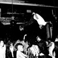
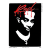

Carti fanpage


About
I wanted a place to showcase my programming skills and build a simple fanpage towards an artist I listen to frequently, Playboi Carti.
Carti is mainly known for taking long periods to drop or lying constantly to his fans, and then when he drops the songs are peak regardless.